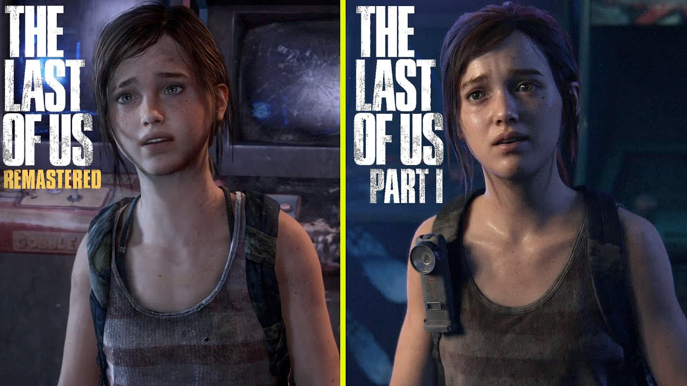

The last of us part 1 - Een gemiste kans
Na veel speculatie en lang wachten, is het dan eindelijk hier. The last of us part 1. De game waar menig The last of us of Naughty dog van, lang maar uitgekeken heeft. De orginele The last of us, die in 2013 uit kwam, heeft al eerder een remaster gehad, genaamt The last of us remastered. Deze game kwam al uit in 2014, een jaar na de uitgave van de orignele game. In deze remaster veranderde er niet veel, de frame rate was wat hoger en de saturation wat beter. Ook was de DLC: Left behind, toegevpegd aan deze remaster. Maar met de meest recente release van The last of us part 1, heeft Naughty dog hun hit game in een nieuw jasje gestoken.
Als groot fan van de orignele game en van de sequal: The last of us part 2, heb ik uiteraard de remake gepreorderd en gespeeld. Tijdens het spelen zijn mij meerdere dingen opgevallen, deze wil ik graag delen. Ten eerste, natuurlijk de grapichs. In mijn mening is dit de best uitziende, meest realistishe game ooit gemaakt. De karakters zien er levensecht uit, hun haar beweegt mee als ze lopen, hun ogen reageren realistish op licht en hun gezicthsuitdrukkingen zijn levensecht. Ook ziet de wereld om de karakters heen er prachtig uit.

Uiteraard zijn er meer veranderingen dan alleen de graphics. Zo is bijvoorbeeld de UI aangepast om meer te lijken op de UI uit de sequal. Ook is het wapen upgrade systeem aangepast. In de orginele game kon je het niet zien als de hoofdpersonage aan zijn wapen werkte, nu zijn daar speciale animaties voor gemaakt. Het ziet er allemaal heel tof uit en speelt geweldig! Klik op de ondertsaande link om een toffe side by side video te bekijken.
Link naar video 
Nu heb ik toch al veel positiefs over The last of us part 1 gezegd. Waarom heet dit artiekel dan een gemiste kans? Nou, in de orginele game is de gameplay nogal hakkelig om het maar even zo te noemen. Het richten van je wapen voelt stroef, de animaties voor de melee combat zijn niet zo goed, je kunt niet dodgen of prone, wat je in part 2 wel kan. De AI is outdated. En zo kan ik nog wel even verder. Nu is dit voor een game uit 2013 niet zo erg. Best logish eigenlijk wel. Voor die tijd was The last of us een goeie game. Maar nu is de gameplay toch wel een beetje over de datum. Nou had ik, en vele fans met mij, toch wel verwacht dat hier in de remake aandacht aan betseed zou zijn en er een upgrade aan de gameplay zou zijn gegeven. Helaas is dat niet het geval. Er is zo goed als niks aan de gameplay veranderd. De animaties zijn hetzelfde, je kunt niet prone, je kunt niet dodgen en de AI voelt nog steeds hetzelfde, ondanks dat er beloofd werd dat deze ook een upgrade had gekregen. Dat valt dus vies tegen.
De tegevallende gameplay had makkelijk vergeven kunnen worden als de prijs lager was geweest. The last of us part 1 kost bij launch namelijk 70 euro. Nou kun je zeggen, ja, dat kost een nieuwe ps5 game nu eenmaal. Maar vergeet niet dat dit geen nieuwe game is. De orginele game is al bijna 10 jaar oud. Nu hebben de developers hard gewerkt om er een gloednieuwe laag verf over heen te gooien en nieuwe features toe te voegen, maar naar mijn mening is dit niet genoeg om er een prijskaartje van een nieuwe game aan te hangen. Er had zoveel meer gedaan kunnen worden aan de gameplay, ze hadden er een masterpiece van kunnen maken, maar uiteindelijk is het een gemiste kans. Het is het zeker waard om de game te spelen, maar wacht tot hij in de uitverkoop is, het is de 70 euro niet waard.